On the 1st of September 1939 the Nazi Germany attacked Poland. Great Britain and France, followed by India, Australia, South Africa and New Zealand, declared war to Germany on the 3rd of September, starting the WWII. On September 17th, the Soviet Union invaded the eastern Polish provinces, following the nonaggression Pact between Germany and Moscow, signed in Moscow on August 23, 1939. A secret protocol drawn up by Hitler and Stalin partitioned Poland between both countries. On September 18 took place at Brest Litovsk the joint parade of the Wehrmacht and the Red Army. The capital Warsaw is bombed by 1150 German bombers and destroyed. Poland surrenders to Nazi Germany on 27 September. On 29 September 1939 is signed at Moscow the German-Soviet frontier and friendship treaty.
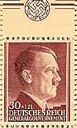
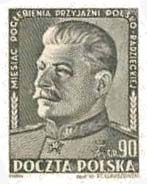
During the months March and April 1940, Soviet Authorities executed 25,700 Polish citizens. Among them were several thousand of Polish officers, prisoners of war, captured by the Red Army, and coldly murdered in Katyn forest. Among the 15,000 murdered officers, the fine fleur of the Polish youth, there were 12 generals and 300 colonels.
On June 22, 1941, in spite of the Molotov-Ribentrop non-aggression pact, Germany started the war against USSR, Hitler's armies invading the territory of the former ally. On April 1943 German military authorities discovered in Katyn forest near Smolensk mass graves of Polish officers, identified by their uniforms and documents found on their bodies. The commission composed of neutral and German forensic experts examined the remains and concluded Soviet responsibility. All entries in the notebooks found on the bodies were dated prior to April 22, 1940 and the most recent date found on Russian newspaper discovered on one of the corpses, was proving that all buried there, died before or soon after that date.
|
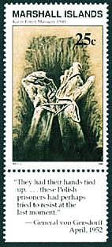 |
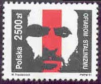 |
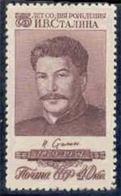 |
USSR government protested strongly against such accusations and denied any involvement in this massacre. In the official note Soviets maintained that the crime was committed in the spring of 1942. At that time Soviet province of Smolensk was already under German occupation and therefore the Germans were the perpetrators of the massacre. According to Russians the allegations that the massacre was committed by Soviet in 1940, were unjustified and insulting fabrication of Goebels Hitlers minister of propaganda.
|
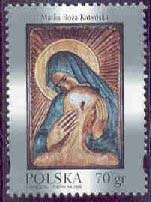 |
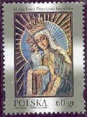 |
Polish Government in Exile, residing in wartime London, requested International Red Cross to investigate. USSR government did not agree with that and considering such a request as an unfriendly act, ended its diplomatic relations with Poles.
The Soviet prosecutor of the Nuremberg International Military Tribunal in his summation of the charges against Goering never mentioned the Katyn massacre. The Soviet prosecutor failed to prove the case of Katyn massacre against the Germans, therefore the matter was dropped by the tribunal.
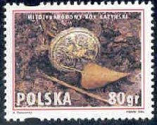 |
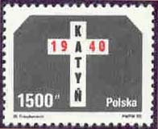 |
USSR persisted in denying any responsibility in this genocide until the Perestroika. In the 1992 Russian Federation president Boris Yelzyn offered a file of documents pertaining to Katyn massacre, to Poland president Lech Walesa. They were all classified, until October 14,1992, as "Top Secret" and are the proof of Soviets guilt. One of them (shown below) is the direct Stalin's order to NKVD (Soviet's secret political police) to execute all Polish prisoners held by them.
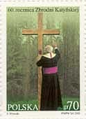 |
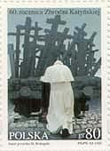 |
In 1951 the US Congress appointed the Select Committee to conduct an investigation of Katyn genocide case. In 1952 the Committee published its findings. They all confirm the Soviet's responsibility. It has to be noted that the name "Katyn Massacre" covers not only the Katyn forest but also two other ones, discovered later: Starobielsk near Kharkov and Ostashkovo (District of Kalinin). Source
|
Protocol of the Politburo. The decision of March the 5th, 1940 (excerpt) 144.- The Case of NKVD of USSR.
|
Please see above a selection of stamps related to the historical period, and to the commemoration of the crime perpetrated against Polish prisoners of war and civil population. All commemoration stamps, excepting for one (Marshall Islands) were issued by Poland.
You are invited to point on the stamps with the mouse index for more information.
Link: Crimes of Communism in Romania
| Created
01/19/2003. Revised:
04/18/2012
. Copyright © 2003 - 2012 by Victor Manta, Switzerland. All rights reserved worldwide. |
↑